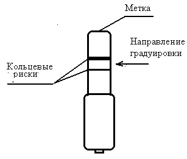
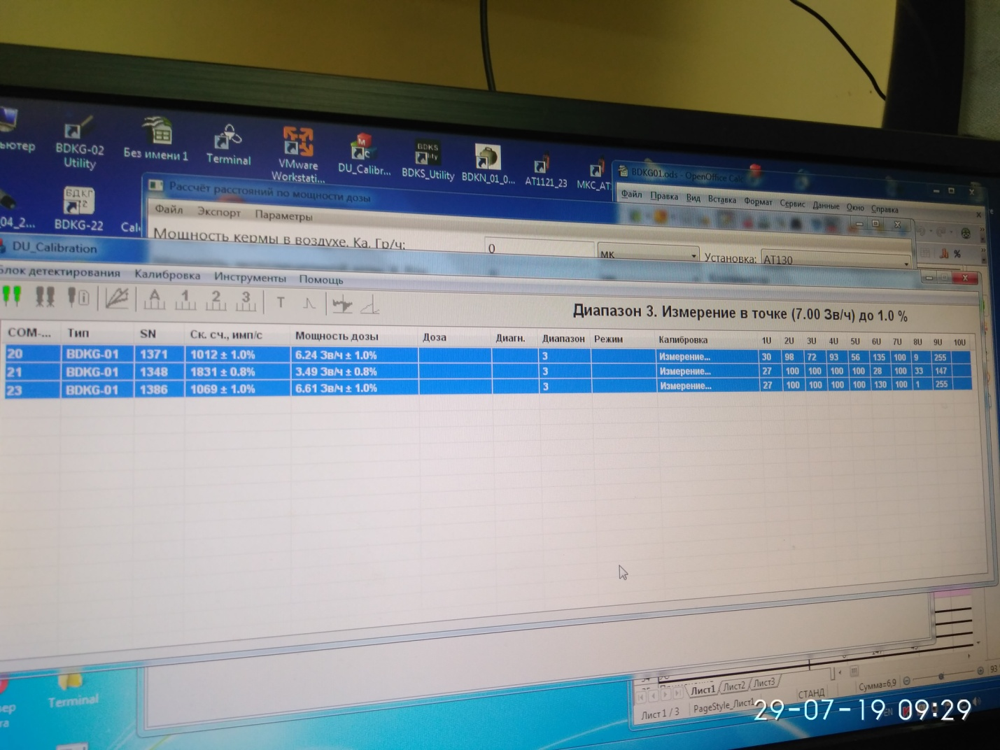
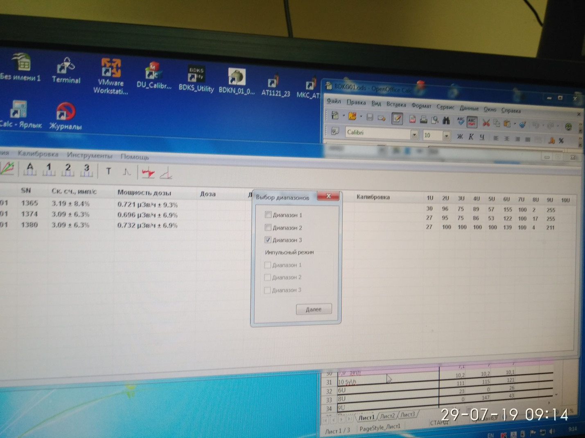
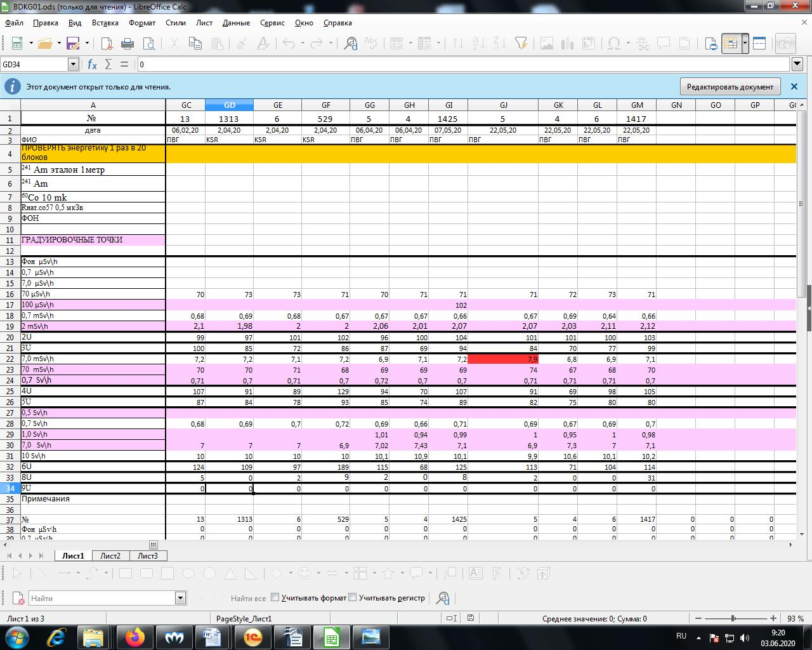

Градуировка БДКГ-01
ЛИНЕЙНОСТЬ
- Установить 3-и блока детектирования на УДГ-АТ130 таким образом чтобы они расположились перпендикулярно оси
излучения ось пересекала через кольцевые риски, а расстояние от источника до центра детектора было
выставлено по центру блоков

- Подключить к ПК
- Запустить ПО DU Calibration

- Нажать Поиск
- Запустить калибровку 3-х диапазонов

- Выставить точки 1 диап 100мк и 2мЗв/ч
- Выставить точки 2 диап 7м 700мЗв/ч
- Выставить точки 3 диап 700м 7 Зв 10Зв/ч
- Снять ПСИ
- Данные переписать в журнал градуировки

ЭНЕРГЕТИКА
- Установить 3 блока детектирования на УДГ-АТ110 таким образом чтобы они расположились перпендикулярно оси
излучения ось пересекала через кольцевые риски, а расстояние от источника до центра детектора было
выставлено по центру блоков
- Подключить к ПК
- Запустить ПО DU Callibration
- Нажать Поиск
- Установить источники
- Am 1м Co60 10мк
- Данные записать в журнал градуировок